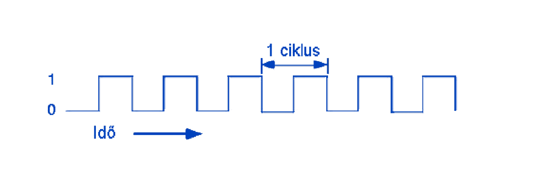
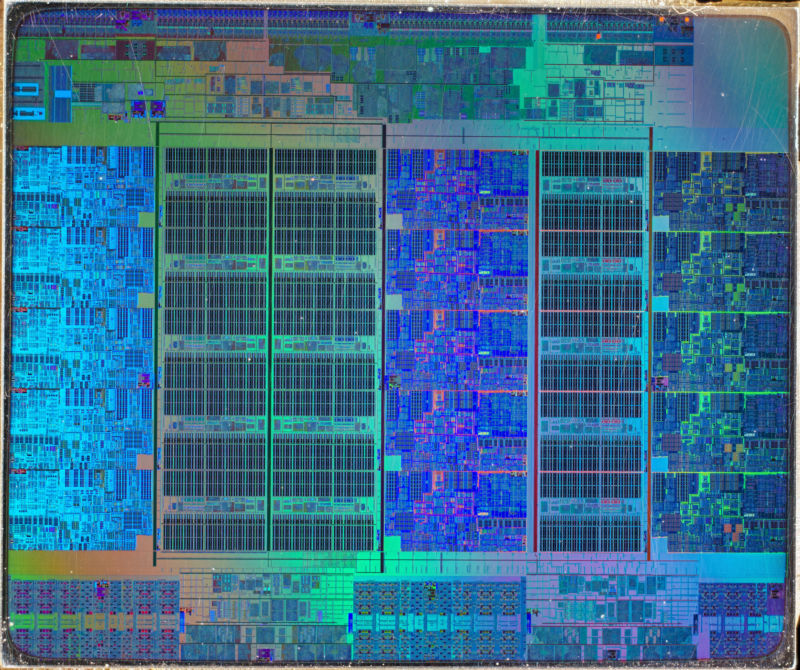

MŰKÖDÉS
A mai számítástechnikai rendszerek alapja, ahogy a processzoroké is, a bináris műveletek feldolgozása. A bináris vagy kettes számrendszer mindössze két állapotot tesz lehetővé, 0 és 1, amelyeket a processzoron belül nagyon egyszerűen lehet feszültségszintekkel létrehozni.
Most az elektronikai kapcsolatok alacsonyabb szintjére lépünk. A processzor építőköve a tranzisztor, amely kapcsolóként működik. Feladata, hogy megváltoztassa a logikai nulla és egyes állapotát. Egyetlen tranzisztor nem lenne képes túl sok számítást elvégezni, így manapság a processzoron belül több milliárd tranzisztor található, amelyek lehetővé teszik a legösszetettebb műveletek végrehajtását is.
Az egyes műveletek együttese olyan utasításokat képez, amelyek kötegeit programoknak nevezünk. A programok utasításai szekvenciálisak, ami azt jelenti, hogy a processzor az utasításokat egymás után hajtja végre az úgynevezett utasítási ciklusokban.
FREKVENCIA
Ha a processzor funkcióját nagyon leegyszerűsítjük, azt állíthatjuk, hogy a tranzisztorok olyan nagyszámú rendszeréről van szó, amelyek gyorsan változtatják állapotukat a szükséges műveletek függvényében. A két impulzus közötti intervallumot frekvenciaciklusnak nevezzük. Ilyenkor a processzor képes tranzisztorait egyesbe, majd vissza nullába kapcsolni.
Az állapotváltozást nulláról egyre belépőélnek, az egyesről nullára változást pedig kilépőélnek nevezzük. Ezen ciklusok mennyisége egy másodperc alatt adja a processzor frekvenciáját. Az egysége a Hertz (Hz), és mivel a mai processzorok frekvenciája több milliárd Hertz, gyakran használjuk a giga (GHz) vagy a mega (MHz, millió Hertz) előtagot.
A frekvenciát gyakran nevezik órajelnek vagy órajel-frekvenciának.
A frekvencia az egyik fő tényező, amely hatással van a processzor teljesítményére. Leegyszerűsítve elmondható, hogy minél magasabb a frekvencia, annál nagyobb a teljesítmény. De ezt az állítást fenntartással kell kezelnünk. Ha két egyébként azonos processzor csak a frekvenciában különbözik, akkor a nagyobb frekvenciával rendelkező a hatékonyabb. Azonban más tényezők is hatással vannak a teljesítményre, mint pl. az architektúra, a magok száma stb., tehát csupán a magasabb frekvencia nem jelent fölényt. A többi processzor paraméterről később ejtünk szót.
TUNINGOLÁS
A processzor tuningolása frekvenciájának növelése, esetleg csökkentése. A frekvencia megegyezik az alap órajel (BCLK) és a processzor szorzó összegével. A BCLK (az angol Base Clock rövidítése) az oszcillátor által az alaplapon generált frekvencia, amely a processzoron kívül, más frekvenciákat is befolyásol, például a memória órajelét, jellemzően 100 MHz-re van állítva. A processzor frekvenciája a legtöbb esetben módosítható. Vagy a BCLK változtatásával, amely a gyakori instabilitás miatt nem ajánlott, és az alaplapok többsége nem is támogatja, vagy a már említett szorzó értékének módosításával.
BOOST FREKVENCIA
Az Intel és AMD processzorok többsége képes saját frekvenciáját automatikusan beállítani. Ezt a Turbo Boost (Intel) és a Turbo Core (AMD) technológiák biztosítják, amelyek nagyon hasonló hatást fejtenek ki. Ha a processzort intenzíven használjuk, az ideiglenesen megnöveli frekvenciáját egészen a "boost" határig, hogy elegendő teljesítményt biztosítson. Ha ilyen teljesítményre nincs szükség, a frekvencia alacsonyabb marad, így energiát takarít meg.
Az AMD azokba a processzoraiba, amelyek modellszáma X-el végződik, egy új Extended Frequency Range, röviden XFR elnevezésű technológiát implementált. Ez lehetővé teszi, hogy a processzor teljesítménye a boost határ fölé menjen, amennyiben ezt a processzor hőmérséklete engedi. Az ezzel a technológiával ellátott modellek kizárólag a hatékonyabb hűtéssel rendelkező felhasználók számára készültek. A csomagolásban általában található processzor hűtők ebben az esetben nem elégségesek, ezért ezeket a processzorokat az AMD hűtő nélkül forgalmazza. Az Intel hasonló politikát folytat a szorzózár nélküli processzorok esetében. Ezen a ponton érdemes megemlíteni, hogy minden AMD Ryzen processzor szorzózár nélküli.
MAG
A magokról tiszta lelkiismerettel elmondható, hogy ezek különálló számítási egységek. Egy többmagos processzor lényegében több darab egymagos processzor egybe integrálva. Mivel a magok függetlenek egymástól, lehetővé teszik, hogy a processzor egyszerre több különböző utasításon dolgozzon, több programot kezeljen egyszerre. Ez kulcsfontosságú a hatékony multitasking esetében. Napjainkban egyre több alkalmazás és játék képes kihasználni a több mag adta előnyöket.
Az operációs rendszer szempontjából az utasítások párhuzamosan kezelt szálakra osztódnak, amelyek egy jól programozott alkalmazás esetében lehetővé teszik, hogy az gyorsabban fusson. Amíg az Intel néhány évvel ezelőtt be nem mutatta a Hyper-Threading technológiát, normális volt, hogy egy processzor mag csak egyetlen szoftvert szálat tudott kezelni. Ma már a processzorok többsége olyan technológiával rendelkezik, amely lehetővé teszi, hogy egy fizikai mag két szálat dolgozzon fel. Emiatt ezeket a processzor szálakat szokták virtuális vagy logikai magoknak is nevezni.
Fontos megjegyezni, hogy teljesítmény szempontjából a processzor szálak nem egyenértékűek egy fizikai maggal, mert megosztják velük a hardver eszközöket, ezért teljesítményük korlátozott. Bár az ilyen technológiát hatékonynak tekintjük, nem állíthatjuk, hogy egy négyszálas kétmagos processzor egyenértékű lenne egy négymagos processzorral.
FOGLALAT
A socket vagyis foglalat az egyik olyan paraméter, amelyet a processzor kiválasztásánál figyelembe kell vennünk, hogy az passzoljon az alaplapunkhoz. Ez lényegében egy csatlakozó, amelybe a processzort behelyezzük, majd lezárjuk. Figyelni kell a jelölésekre, mert ha az alaplap foglalata nem egyezik meg a processzoréval, akkor nemcsak, hogy nem fognak tudni együttműködni, a processzort be sem lehet helyezni a foglalatba. Lényegében két fő socket konstrukcióról beszélhetünk.

Az elterjedtebb LGA a processzort érintkezőpadok segítségével kapcsolja össze az alaplappal. Az egyre inkább háttérbe szoruló PGA alapelve, hogy a processzoron lévő tűket az alaplap foglalatában lévő nyílásokba kell süllyeszteni.
Az egyes aljzatok megnevezésükben is különböznek egymástól, és vásárlásnál főleg erre kell odafigyelni. Az Intel aktuális foglalata LGA1151 az AMD foglalata pedig AM4 elnevezést kapott. Amennyiben a HEDT szegmens processzorai érdekelnének, akkor nem csak a chipek különböző architektúrájára, hanem a különböző foglalatokra is figyelni kell. Az AMD a Threadripper processzorok számára létrehozta a TR4 foglalatot, míg a sokéves tapasztalattal rendelkező Intel csak frissítette a régebbi HEDT foglalatot, és LGA2066-nak nevezte el.